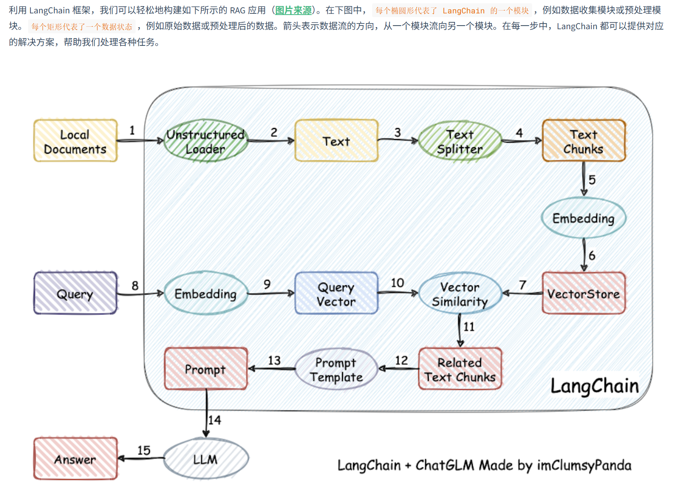

第一章：大模型应用开发基础¶
约 2013 个字 56 行代码 1 张图片 预计阅读时间 8 分钟
1. 大型语言模型 (LLM) 概览¶
1.1 核心概念¶
- 定义：LLM（Large Language Model）是基于深度学习（通常是 Transformer 架构），包含数百亿甚至数千亿参数，旨在理解和生成人类语言的人工智能模型。
- 本质：通过“预测下一个词”的训练方式，将世界知识压缩到模型参数中。
- 代表模型：
- 国外：GPT 系列 (OpenAI), LLaMA (Meta), Claude (Anthropic), Gemini (Google)。
- 国内：DeepSeek (深度求索), 通义千问 (阿里), 文心一言 (百度), GLM (智谱)。
1.2 关键特点与“涌现”能力¶
与传统模型相比，LLM 在规模扩大后展现出 Scaling Law（性能随规模增长）和 涌现能力（量变引起质变）：
- 上下文学习 (In-Context Learning)：无需额外训练，仅通过提示（Prompt）中的示例即可学习并执行任务。
- 指令遵循 (Instruction Following)：能够理解并执行自然语言描述的新任务指令。
- 思维链 (Chain of Thought, CoT)：通过展示推理步骤，解决复杂的逻辑或数学问题。
2. 检索增强生成 (RAG) 【重点】¶
2.1 什么是 RAG¶
RAG (Retrieval-Augmented Generation) 是一种将检索与生成相结合的技术架构。它通过从外部知识库检索相关信息，作为上下文输入给 LLM，从而指导模型生成更精准的答案。
2.2 解决的核心问题¶
RAG 主要解决了 LLM 自身的以下局限：
- 幻觉问题：减少一本正经胡说八道的情况。
- 知识滞后：LLM 训练数据是静态的，RAG 可实时外挂最新数据。
- 私有数据匮乏：赋予 LLM 访问企业或个人私有知识库的能力。
- 可追溯性：生成的答案可以找到引用的原文出处。
2.3 RAG 工作流程¶
一个标准的 RAG 流程包含四个阶段：
- 数据处理：清洗原始数据 -> 切片 -> 向量化 -> 存入向量数据库。
- 检索 (Retrieve)：将用户问题向量化 -> 在数据库中匹配最相似的片段 (Top K)。
- 增强 (Augment)：将检索到的片段与用户问题组合，构建包含上下文的 Prompt。
- 生成 (Generate)：将增强后的 Prompt 输入 LLM，生成最终回答。
2.4 RAG vs Finetune (微调)¶
| 维度 | RAG (检索增强) | Finetune (微调) |
|---|---|---|
| 知识更新 | 极快 (更新数据库即可) | 慢 (需重新训练) |
| 适用场景 | 动态数据、私有知识库、需准确溯源 | 学习特定领域术语、风格、格式 |
| 成本 | 较低 (主要在推理和存储) | 较高 (训练算力昂贵) |
| 可解释性 | 高 (可查引文) | 低 (黑盒) |
3. LangChain 开发框架 【重点】¶
3.1 简介¶
LangChain 是目前最流行的 LLM 应用开发框架。它充当了“胶水”的角色，将 LLM 与外部数据、计算能力和环境交互连接起来，极大地简化了端到端应用的开发。
3.2 六大核心组件¶
LangChain 提供了标准化的接口来构建应用：
- Model I/O (模型输入/输出)：管理 Prompt、调用 LLM 接口、解析输出结果。
- Data Connection (数据连接)：处理文档加载、转换、Embedding 向量化及向量存储。
- Chains (链)：将多个组件（如检索+生成）串联起来，形成完整的任务流。
- Memory (记忆)：让模型在多轮对话中“记住”之前的上下文。
- Agents (代理)：让 LLM 充当决策大脑，自主决定调用哪些工具（如搜索、计算器）来解决问题。
- Callbacks (回调)：用于记录日志、监控中间步骤流式输出等。

4. 大模型开发流程¶
4.1 开发范式转变¶
- 传统 AI：拆解业务 -> 训练多个子模型 -> 调优 -> 集成（重训练）。
- LLM 开发：以 Prompt 为核心。通用大模型 + 业务 Prompt + 逻辑编排 = 应用。
4.2 简要流程¶
大模型开发通常遵循“敏捷迭代”的思路：
- 确定开发目标，可以先构建一个最小可行性产品（MVP），逐步完善，优化
- 设计功能，明确什么是核心的功能，什么是子功能
- 搭建整体架构。如使用Langchain
- 搭建数据库，这步一般需要我们收集数据并进行处理，以向量化形式存储在数据库中
- Prompt Engineering
- 验证迭代
- 前后端搭建
- 优化
5. 开发环境配置逻辑总结¶
本节不记录具体的命令，仅梳理配置环境背后的 目的 与 逻辑，以便理解“为什么要这么做”。
5.1 阿里云服务器 (ECS)¶
- 目的：获取一个稳定、高性能、且网络环境（如下载模型权重）相对通畅的 Linux 操作系统。
- 逻辑：
- 租用云端计算资源代替本地电脑，方便长期运行任务。
- 选择 Ubuntu 系统是 AI 开发的行业标准。
5.2 远程连接 (SSH & VSCode)¶
- 目的：实现“本地写代码，云端跑代码”的高效开发模式。
- 逻辑：
- SSH Key：配置免密登录，建立安全的传输通道。
- VSCode Remote-SSH：将本地编辑器连接到远程服务器，像操作本地文件一样操作云端文件。
5.3 Python 环境管理 (Conda)¶
- 目的：解决依赖冲突，隔离不同项目的运行环境。
- 逻辑：
- 使用 Miniconda 创建独立的虚拟环境（如
llm-universe）。 - 在虚拟环境中安装特定的包（
pip install -r requirements.txt），避免污染系统自带的 Python 环境。
5.4 Jupyter Notebook¶
- 目的：交互式编程，适合数据探索和 LLM 调试。
- 逻辑：
- 所见即所得：代码块执行后立即显示结果（文本/图表）。
- 通过 VSCode 的 Jupyter 插件，直接调用远程服务器的 Conda 环境内核运行代码。
第二章：使用 LLM API 开发应用¶
1. 核心概念¶
- Prompt (提示词)：用户输入给大模型的内容。类似于 NLP 任务中的输入模板，现在泛指所有发给 LLM 的指令，模型的返回结果称为 Completion。
- Temperature (温度)：控制 LLM 生成结果随机性与创造性的参数（通常在 0~1 之间）。数值越接近 0，结果越保守稳定；数值越接近 1，结果越发散更有创意。
- System Prompt (系统提示词)：一种特殊的 Prompt，用于在会话开始前设定模型的人设、背景或行为准则（如“你是一个幽默的助手”），在整个会话中持久生效。
- API (应用程序接口)：允许开发者通过代码直接调用大模型服务（如 ChatGPT、文心一言、智谱 GLM 等）的接口，是构建 LLM 应用的基础。
2. API 调用代码解析¶
以下展示通用的 API 调用封装逻辑（以 OpenAI 为例），核心在于构造消息列表并发送请求：
import os
from openai import OpenAI
# 初始化客户端，通常从环境变量中读取 API Key 以保证安全
client = OpenAI(api_key=os.environ.get("OPENAI_API_KEY"))
# 定义一个获取模型回复的封装函数
def get_completion(prompt, model="gpt-4o"):
# 构造 messages 列表，这是 Chat 模式的标准输入格式
# role="user" 表示这是用户发出的指令
messages = [{"role": "user", "content": prompt}]
# 调用 API 接口生成回复
response = client.chat.completions.create(
model=model, # 指定要调用的模型版本
messages=messages, # 传入上下文/提示词列表
temperature=0 # 设置温度为0，保证输出的稳定性
)
# 从返回的复杂对象中提取出模型生成的文本内容
return response.choices[0].message.content
3. Prompt Engineering 设计原则¶
设计高效 Prompt 的核心在于：编写清晰、具体的指令 以及 给予模型充足的思考时间。以下是五个关键技巧：
3.1 使用分隔符¶
原则：使用标点符号（如 ```, """, < > 等）将指令与待处理的文本内容隔开。这能防止“提示词注入”（即用户输入的文本干扰了预设指令），明确模型处理的边界。
- 代码示例：
3.2 寻求结构化的输出¶
原则：要求模型按照特定格式（如 JSON、HTML）返回内容。这使得模型的输出容易被代码解析和后续处理。
- 代码示例：
# 明确指定返回 JSON 格式以及包含的键名
prompt = f"""
请生成三本虚构书籍清单，并以 JSON 格式提供，包含以下键: book_id, title, author, genre。
"""
3.3 提供少量示例 (Few-shot)¶
原则：在提问前提供一两个“输入-输出”的参考样例。这能让模型快速模仿示例的风格、语气或格式来回答新问题。
- 代码示例：
prompt = f"""
你的任务是以一致的风格回答问题（注意：文言文和白话的区别）。
<学生>: 请教我何为耐心。
<圣贤>: 天生我材必有用，千金散尽还复来。
<学生>: 请教我何为坚持。
<圣贤>: 故不积跬步，无以至千里；不积小流，无以成江海。骑骥一跃，不能十步；驽马十驾，功在不舍。
<学生>: 请教我何为孝顺。
"""
response = get_completion(prompt)
print(response)
3.4 指定完成任务所需的步骤¶
原则：对于复杂任务，将其拆解为明确的步骤序列。这能防止模型遗漏环节，提高结果的准确性。
- 代码示例：
# 强制模型按顺序执行摘要、翻译、提取名称、格式化输出
prompt = f"""
1-用一句话概括下面用<>括起来的文本。
2-将摘要翻译成英语。
3-在英语摘要中列出每个名称。
4-输出一个 JSON 对象...
Text: <{text}>
"""
3.5 指导模型在下结论之前找出一个自己的解法¶
原则：在判断他人答案是否正确时，要求模型先自己“做一遍”题目，再进行对比。这能强迫模型进行深层推理，避免模型因匆忙模仿错误答案而产生幻觉。
- 代码示例：